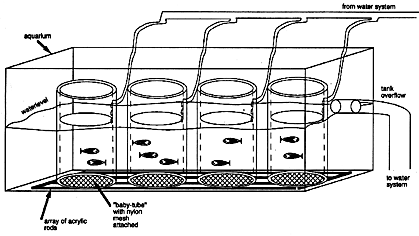

The following is a relatively less labor intensive method for feeding and raising babies until they are big enough to live in regular fish tanks.
1. When the larvae have hatched, transfer them into a new dish or beaker and completely separate them from their chorions (see Removing Embryos from Their Chorions, Chapter 4). It is important to remove the chorions to reduce the growth of fungus and bacteria.
2. On day 5, transfer larvae into 1000 ml beakers (up to 100 larvae per beaker). Fill the beakers with about 200 ml of Embryo Medium. Feed 5 ml of the paramecium suspension (see above) three times daily on day 5 and 6, then 10 ml three times daily thereafter.
3. On day 9 or 10, when the larvae have nice "paramecium bellies", transfer them into "baby-tubes". Pour the larvae from a 1 l beaker into each baby-tube. At this age, their belly is big enough so that they will not pass through the mesh.
4. Exchange the water and aerate with a Pasteur pipette in the baby-tube attached to an air line. One or two air bubbles every second is sufficient because more air will move the water too much and the fish will have to fight the current.
5. Feed 5-10 ml (for 20-100 larvae) of paramecium suspension 3 times per day.
6. Every second day, change the water with an aspirator, remove dead fish from the baby-tube, and add about 200 ml of Embryo Medium.
7. Beginning on day 15 to 20, feed the fish with brine shrimp three times a day. Be sure to remove dead brine shrimp daily.
8. When about 90% of the fish eat brine shrimp, transfer the baby-tubes into fish tanks (see Figure 6).
9. Continue feeding the fish 3 times each day for 5 to 10 days with the small size brine shrimp. In addition feed them each evening with about 10 ml of Spirulina (1 teaspoon of Spirulina slurry per 200 ml of fish water; Spirulina from Argent Laboratories). It is unnecessary to clean the tubes as long as the water flow is adequate. Fish can stay in these tubes until they are about 4-6 weeks old and are large enough to go into regular tanks.
The design of these tubes is based on a simpler version by C. Nüsslein-Volhard from Tübingen. Use acrylic tubes of about 10 cm diameter with 6-7 mm walls and about 15 cm long. Close one end of the tubes by attaching a 0.5 mm nylon mesh with silicone glue. Let the glue dry and rinse thoroughly. On the other end of the tube, drill a small hole which allows you to run a small water line (e.g. 1/4 inch) into the tube. The hole should be slightly smaller than the water line (e.g. 15/64 inch for a 1/4 inch line) such that the line can not slide out again. Place a completed baby tube into a 2000 ml beaker.
The tanks should have overflows or standpipes that maintain the water level at 10-12 cm. Cover the bottom of the tanks with a wide mesh or an array of acrylic rods that hold the baby-tubes up off the bottom so that water and dirt can flow freely through the mesh in the bottom of the baby-tubes and into the tanks. Attach the water line from each baby-tube to the water system pressure line and adjust the water flow to a slow, steady dripping. We put several baby-tubes into one tank, and use a manifold (all plastic, e.g. Penplax) to distribute the water to the different baby-tubes.
Figure 4. Baby tubes 